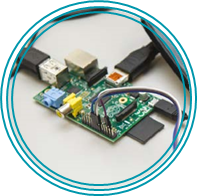

If you are planning to utilise old machines, ensure that all data has been erased and destroyed as per ICO recommendations
Health and Safety guidance on reusing any old electrical equipment
BYOD (Bring Your Own Device) has gained popularity in schools recently, but should be carefully considered and implemented, NAACE has provided some key areas you may wish to consider before rolling out such a programme in your school
Many of the LGfL resources and content, particularly LGfL-Branded and developed content such as History of Computing can be accessed via tablets and apps. For more on accessibility of LGfL content on mobile devices see this page.
Hardware
Most school computer labs can provide the hardware and software necessary to deliver the new curriculum. See this Computing at School document for detailed requirements. Taking apart old computers can aid pupils? understanding of hardware ? check with your IT department to see if they have any spare. Be aware of health and safety considerations and ensure you undertake a risk assessment for such activities.

Small computers such as the Raspberry Pi can provide an excellent teaching tool. Pupils can see individual hardware components and the Raspberry Pi offers access to operating system functionality such as the command line that might be restricted in school
computer labs. The command line allows pupils to give the computer textual commands and to query details such as network settings. Some basics of networking can be taught using a router, cables and a Pi (see here for this exercise and other teaching resources). You should carefully consider how you will incorporate small computers such as the Raspberry Pi into your teaching, and the extra costs involved in connecting a monitor, keyboard, mouse and power supply. 
The curriculum suggests that pupils should use a range of devices, which may include digital cameras, online servers and sound recorders (and potentially pupils? own digital devices such as mobile phones and tablets).